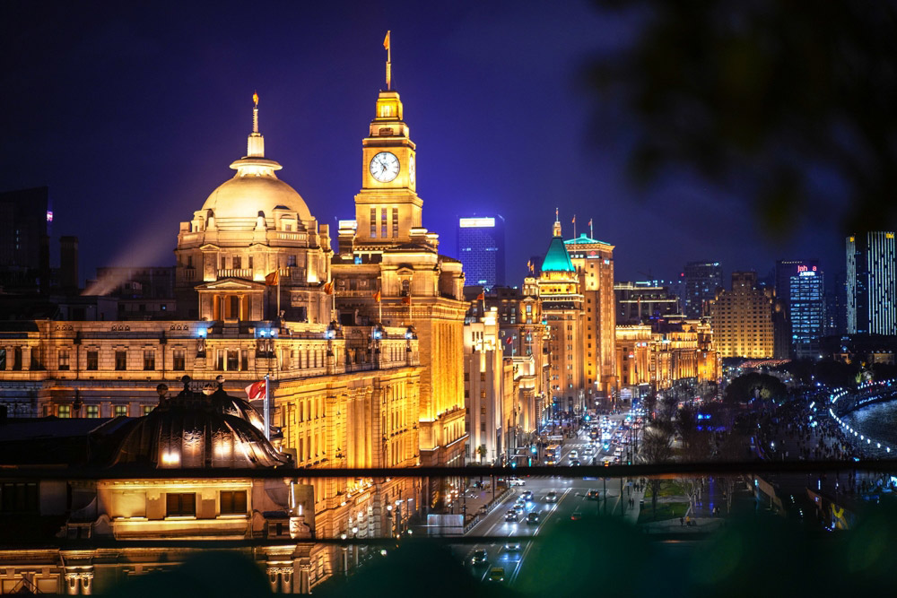
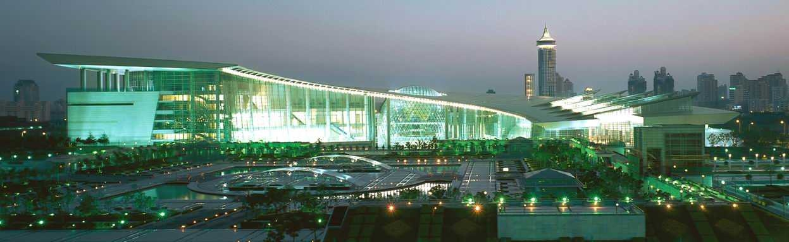
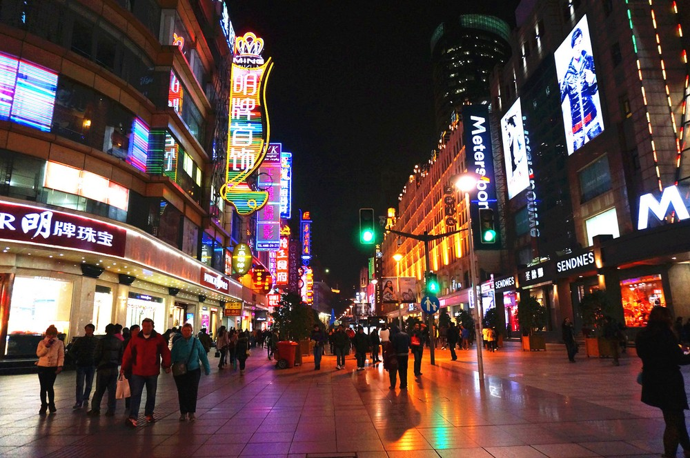
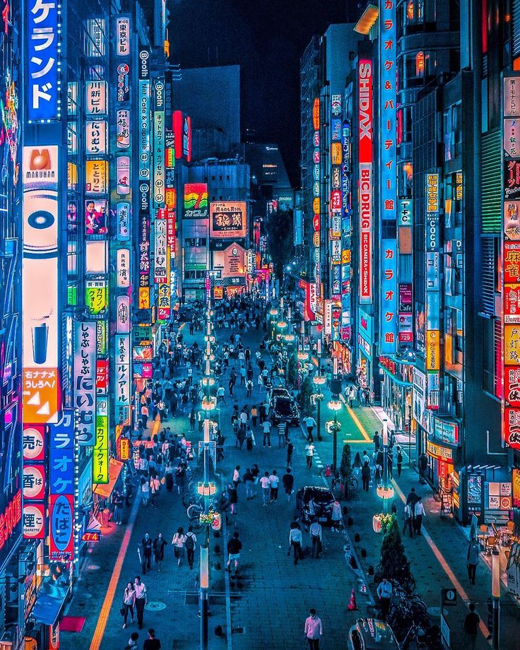

El Corazón de la Innovación
Shanghái es una ciudad donde la tecnología y la arquitectura futurista crean una atmósfera única. Con luces de neón reflejándose en el río Huangpu, sus calles están repletas de avances tecnológicos y vida urbana acelerada.
Desde el distrito de Pudong hasta los mercados tech de Xujiahui, Shanghái es la capital asiática del progreso.
📍 Ubicación y Mapa
Shanghái, una ciudad que redefine el futuro con su tecnología y arquitectura.
- ⚡ Pudong - Distrito financiero y tecnológico.
- 🌆 The Bund - Zona con rascacielos iluminados.
- 💠 Xujiahui - Centro de innovación y comercio tecnológico.
Mapa interactivo de Shanghái
🚄 Velocidad y Movilidad Futurista
Shanghái es la ciudad de la velocidad, conectando millones de personas con sistemas avanzados:
- 🚄 Tren Maglev - El más rápido del mundo, alcanzando 431 km/h.
- 🚆 Metro automatizado - Una de las redes urbanas más extensas y eficientes.
- 🚖 Taxis eléctricos - Reduciendo la contaminación con tecnología sostenible.
🏙️ Arquitectura Monumental
El skyline de Shanghái redefine lo que significa una ciudad del futuro:
- 🌆 Torre de Shanghái - 632 metros, el segundo edificio más alto del mundo.
- 💠 Centro Financiero - Con su diseño futurista y luces interactivas.
- 🏗️ Puente Lupu - Una obra maestra de la ingeniería moderna.
🌏 Shanghái, el Núcleo Global
Como una de las ciudades más conectadas del mundo, Shanghái lidera la economía asiática:
- 🚢 Puerto de Shanghái - El más activo del mundo en comercio internacional.
- 🛍️ Mercados de tecnología - Especializados en innovación y electrónica de última generación.
- 🌐 Conectividad global - Una de las ciudades con la mayor infraestructura digital.
📷 Galería
Vista nocturna de Shanghái
The Bund iluminado
Distrito tecnológico de Shanghái
Calles futuristas de Shanghái
Luces neón en Shanghái